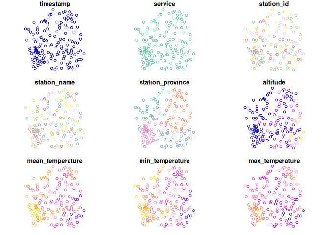

meteospain aims to offer access to different Spanish meteorological stations data in an uniform way.
Installation
meteospain is in CRAN, and can be installed as any other package:
install.packages('meteospain')Also, meteospain is in active development. You can install the development version from GitHub with:
# install.packages("remotes")
remotes::install_github("emf-creaf/meteospain")Services
The following meteorological stations services are available:
- AEMET, the Spanish State Meteorological Agency.
- MeteoCat, the Catalan Meteorology Service.
- MeteoGalicia, the Galician Meteorological Service.
- RIA, the Andalucian Agroclimatic Information Network.
- Meteoclimatic, the Spanish non-professional meteorological stations network.
Examples
Access to the services is done with the get_meteo_from function, providing the name of the service and the options. Each service has a dedicated *service*_options() function to guide through the specifics of each service:
library(meteospain)
mg_options <- meteogalicia_options(resolution = 'current_day')
get_meteo_from('meteogalicia', mg_options)
#> ℹ A información divulgada a través deste servidor ofrécese gratuitamente aos
#> cidadáns para que poida ser
#> utilizada libremente por eles, co único compromiso de mencionar expresamente a
#> MeteoGalicia e á
#> Consellería de Medio Ambiente, Territorio e Vivenda da Xunta de Galicia como
#> fonte da mesma cada vez
#> que as utilice para os usos distintos do particular e privado.
#> https://www.meteogalicia.gal/aviso-legal
#> Simple feature collection with 3668 features and 17 fields
#> Geometry type: POINT
#> Dimension: XY
#> Bounding box: xmin: -9.184586 ymin: 41.8982 xmax: -6.783357 ymax: 43.70426
#> Geodetic CRS: WGS 84
#> # A tibble: 3,668 × 18
#> timestamp service station_id station_name station_province altitude
#> <dttm> <chr> <chr> <chr> <chr> [m]
#> 1 2025-06-30 06:00:00 meteog… 10045 Mabegondo A Coruña 94
#> 2 2025-06-30 06:00:00 meteog… 10046 Marco da Cu… A Coruña 651
#> 3 2025-06-30 06:00:00 meteog… 10047 Pedro Murias Lugo 51
#> 4 2025-06-30 06:00:00 meteog… 10048 O Invernade… Ourense 1026
#> 5 2025-06-30 06:00:00 meteog… 10049 Corrubedo A Coruña 30
#> 6 2025-06-30 06:00:00 meteog… 10050 CIS Ferrol A Coruña 37
#> 7 2025-06-30 06:00:00 meteog… 10052 Muralla A Coruña 661
#> 8 2025-06-30 06:00:00 meteog… 10053 Campus Lugo Lugo 400
#> 9 2025-06-30 06:00:00 meteog… 10055 Guitiriz-Mi… Lugo 684
#> 10 2025-06-30 06:00:00 meteog… 10056 Marroxo Lugo 645
#> # ℹ 3,658 more rows
#> # ℹ 12 more variables: temperature [°C], min_temperature [°C],
#> # max_temperature [°C], relative_humidity [%], precipitation [L/m^2],
#> # max_precipitation_hour [L/h/m^2], wind_direction [°],
#> # max_wind_direction [°], wind_speed [m/s], max_wind_speed [m/s],
#> # insolation [h], geometry <POINT [°]>Stations info can be accessed with get_stations_info_from function:
get_stations_info_from('meteogalicia', mg_options)
#> Simple feature collection with 154 features and 5 fields
#> Geometry type: POINT
#> Dimension: XY
#> Bounding box: xmin: -9.184586 ymin: 41.8982 xmax: -6.783357 ymax: 43.7383
#> Geodetic CRS: WGS 84
#> # A tibble: 154 × 6
#> service station_id station_name station_province altitude
#> * <chr> <chr> <chr> <chr> [m]
#> 1 meteogalicia 10157 Coruña-Torre de Hércules A Coruña 21
#> 2 meteogalicia 14000 Coruña-Dique A Coruña 5
#> 3 meteogalicia 10045 Mabegondo A Coruña 94
#> 4 meteogalicia 14003 Punta Langosteira A Coruña 5
#> 5 meteogalicia 10144 Arzúa A Coruña 362
#> 6 meteogalicia 19005 Guísamo A Coruña 175
#> 7 meteogalicia 10095 Sergude A Coruña 231
#> 8 meteogalicia 10800 Camariñas A Coruña 5
#> 9 meteogalicia 19001 Rus A Coruña 134
#> 10 meteogalicia 10147 Cariño A Coruña 20
#> # ℹ 144 more rows
#> # ℹ 1 more variable: geometry <POINT [°]>Returned objects are spatial objects (using the sf R package), so results can be plotted directly:
library(sf)
#> Linking to GEOS 3.13.1, GDAL 3.11.0, PROJ 9.6.0; sf_use_s2() is TRUE
mg_options <- meteogalicia_options(resolution = 'daily', start_date = as.Date('2021-04-25'))
plot(get_meteo_from('meteogalicia', mg_options))
#> ℹ A información divulgada a través deste servidor ofrécese gratuitamente aos
#> cidadáns para que poida ser
#> utilizada libremente por eles, co único compromiso de mencionar expresamente a
#> MeteoGalicia e á
#> Consellería de Medio Ambiente, Territorio e Vivenda da Xunta de Galicia como
#> fonte da mesma cada vez
#> que as utilice para os usos distintos do particular e privado.
#> https://www.meteogalicia.gal/aviso-legal
#> Warning: plotting the first 9 out of 26 attributes; use max.plot = 26 to plot
#> all
plot(get_stations_info_from('meteogalicia', mg_options))
API keys
Some services, like AEMET or Meteocat, require an API key to access the data. meteospain doesn’t provide any key for those services, see ?services_options for information about this.
Once a key has been obtained, we can get the meteo:
get_meteo_from('aemet', aemet_options(api_key = keyring::key_get("aemet")))
#> ℹ © AEMET. Autorizado el uso de la información y su reproducción citando a
#> AEMET como autora de la misma.
#> https://www.aemet.es/es/nota_legal
#> Simple feature collection with 9376 features and 22 fields
#> Geometry type: POINT
#> Dimension: XY
#> Bounding box: xmin: -18.115 ymin: 27.66667 xmax: 4.323889 ymax: 43.78621
#> Geodetic CRS: WGS 84
#> # A tibble: 9,376 × 23
#> timestamp service station_id station_name station_province altitude
#> * <dttm> <chr> <chr> <chr> <chr> [m]
#> 1 2025-06-30 17:00:00 aemet 0009X ALFORJA TARRAGONA 406
#> 2 2025-06-30 17:00:00 aemet 0016A REUS AEROP… <NA> 71
#> 3 2025-06-30 17:00:00 aemet 0034X VALLS TARRAGONA 233
#> 4 2025-06-30 17:00:00 aemet 0042Y TARRAGONA … <NA> 55
#> 5 2025-06-30 17:00:00 aemet 0061X PONTONS BARCELONA 632
#> 6 2025-06-30 17:00:00 aemet 0066X VILAFRANCA … BARCELONA 177
#> 7 2025-06-30 17:00:00 aemet 0073X SITGES VAL… <NA> 58
#> 8 2025-06-30 17:00:00 aemet 0076 BARCELONA … <NA> 4
#> 9 2025-06-30 17:00:00 aemet 0092X BERGA INST… <NA> 682
#> 10 2025-06-30 17:00:00 aemet 0106X BALSARENY BARCELONA 361
#> # ℹ 9,366 more rows
#> # ℹ 17 more variables: temperature_soil [°C], temperature_soil_20 [°C],
#> # temperature_soil_5 [°C], temperature [°C], temperature_dew_point [°C],
#> # min_temperature [°C], max_temperature [°C], relative_humidity [%],
#> # precipitation [L/m^2], wind_direction [°], max_wind_direction [°],
#> # max_wind_speed [m/s], wind_speed [m/s], insolation [h],
#> # atmospheric_pressure [hPa], snow_cover [cm], geometry <POINT [°]>